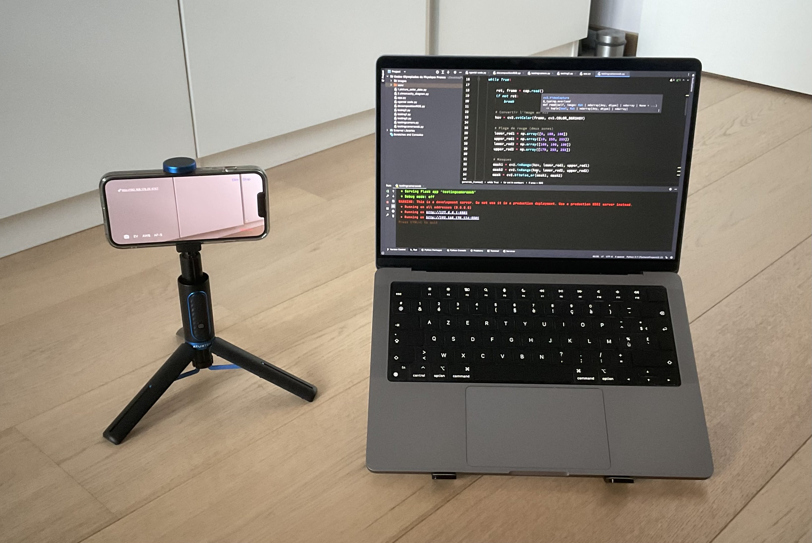

Why a crack detection device ?
Applying liquid crystals on concrete is not useful if we cannot see clearly a change of color. And hiring someone to look 24/7 at a concrete infrastructure would be boring, tiring and expensive. We need to automate the process. Thank to a simple Python program, a computer and a smartphone, we can easily fulfill this task.
Our simple, costless and reproducable crack detection device
We set up a page in this website Results where we can display a live video flow of our crack detection device. It is live when we run our Python code. The setup is very basic : a smartphone linked to a computer with the DroidCam app to have a video. Here is what is looks like :
Our crack detection device
How to us it concretely ?
This very simple approach of a crack detection device is a solution for individuals who do not have access to professional equipment and do not need it. Individuals can have their own crack detection device for their specific needs without spending any money.
Next step : making it an app